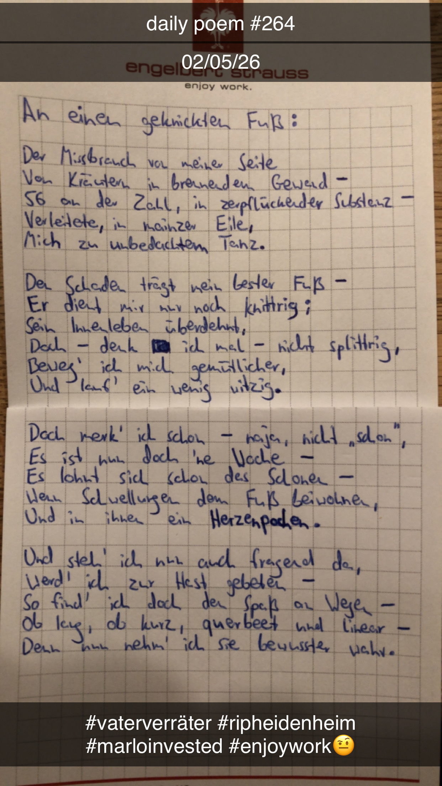

An einen geknickten Fuß
Der Missbrauch, von meiner Seite,
Von Kräutern in brennendem Gewand –
56 an der Zahl, in zerpflückender Substanz –
Verleitete, in mainzer Eile,
Mich zu unbedachtem Tanz.
Den Schaden trägt mein bester Fuß –
Er dient mir nur noch knittrig;
Sein Innenleben überdehnt,
Doch – denk' ich mal – nicht splittrig,
Beweg' ich mich gemütlicher,
Und lauf' ein wenig witzig.
Doch merk' ich schon – na ja, nicht "schon",
Es ist nun doch 'ne Woche –
Es lohnt sich schon das Schonen –
Wenn Schwellungen dem Fuß beiwohnen,
Und in ihnen ein Herzenpochen.
Und steh' ich nun auch fragend da,
Werd' ich zur Hast gebeten –
So find' ich doch den Spaß an Wegen –
Ob lang, ob kurz, querbeet und linear –
Denn nun nehm' ich sie bewusster wahr.
